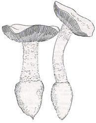
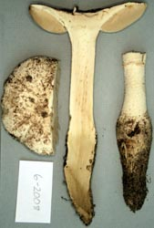
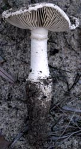
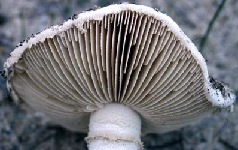
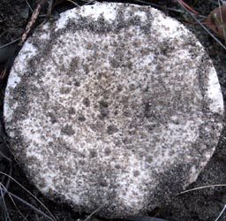
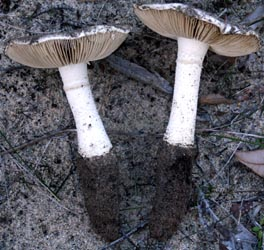

| name | Amanita ochroterrea |
| name status | nomen acceptum |
| author | Gentilli ex Bas |
| english name | "Ocher Earth Lepidella" |
| synonyms |
=Amanita brunneiphylla O. K. Mill. |
| images |
 1. Amanita ochroterrea, King's Park, Perth, Western Australia, Australia.  2. Amanita ochroterrea, Western Australia, Australia.  3. Amanita ochroterrea, Western Australia, Australia.  4. Amanita ochroterrea, Western Australia, Australia.  5. Amanita ochroterrea, Western Australia, Australia.  6. Amanita ochroterrea, Western Australia, Australia. |
| intro | This description is based on Bas' (1969) original description and the original description of A. brunneiphylla (Miller 1992). |
| cap |
The cap of Amanita ochroterrea is 100 - 110 mm wide, convex to plane or plano-concave with age, dingy buff, darker with age, with a nonsulcate, appendiculate margin. The cap is covered with more or less felted-subfloccose, indistinctly delimited, patch- or crust-like remnants of volva especially at the center. From our former brief tab for A. brunneiphylla based on (Miller 1992): The fruiting bodies of this species grows deeply inserted in sandy soils--with only the cap showing above the surface. The cap of Amanita brunneiphylla is 45 - 85 mm wide, broadly convex to nearly plane in age, dry, dull white, with a nonstriate and appendiculate margin. The cap is covered with numerous soft, low, white, cottony volval warts over the center, diminishing toward the cap margin. The volva also comes off easily on the fingers. The flesh is white. |
| gills |
The gills are crowded, free or just reaching the top of the stem, moderately broad, and dingy buff to dark buff. The short gills are truncate. From our former brief tab for A. brunneiphylla based on (Miller 1992): The gills are subdistant, broad in the center, nearly free, light brown, and darker brown with age. The short gills are of diverse lengths and common. |
| stem |
The stem is 160 - 190 × 20 - 30 mm, dingy buff, with a few more or less concentric rows of recurving, small scales. From our former brief tab for A. brunneiphylla based on (Miller 1992): The stem is 105 - 140 × 13 - 21 mm, dull white, with mealy patches of volva at the base. The bulb is a tapering fusiform bulb, 40 - 60 × 25 - 36 mm. The flesh is white, tinted gray in the base. |
| odor/taste | From our former brief tab for A. brunneiphylla based on (Miller 1992): The odor of this species is offensive, "stale," or chlorine-like. |
| spores |
The spores measure (10-) 11 - 13 (-13.5) × 5 - 6.5 µm and are amyloid and cylindrical to elongate. Clamps are present at bases of basidia. From our former brief tab for A. brunneiphylla based on (Miller 1992): The spores measure (8.0-) 9.0 - 10.8 × 4.1 - 5.0 µm and are elongate to cylindric and strongly amyloid. In deposit, the spores are said to have an unusual pale yellow color. |
| discussion |
Amanita ochroterrea is known only from the state of Western Australia, Australia. Bas placed this species in his stirps Grossa. It was originally interpreted by Gentilli as a form of A. preissii (Fr.) Sacc.; however, because of the difference in volval structure, the presence of clamps, and a less gelatinized structure of the cap's skin, Bas argued instead that A. ochroterrea be placed in his stirps Grossa (see the discusssion of A. grossa (Berk.) Sacc.). See also, an extended discussion under Amanita austroviridis O. K . Mill.—R. E. Tulloss From our former brief tab for A. brunneiphylla based on (Miller 1992): Originally described from the state of Western Australia in association with open stands of Eucalyptus and Allocasuarina growing in deep sandy soil. In Amanita, elongate bulbs, narrow spores, and fruiting bodies deeply inserted in the soil are often associated with "leaky" ecosystems (Tulloss 2005). Café au lait lamellae are known from North American taxa such as A. microlepis Bas and A. pelioma Bas. However, the American species have little else in common with A. brunneiphylla. Miller reports one of the paratype specimens to have had a yellow tint which suggests that this species may be subject to the yellowing syndrome that has been noticed in species of section Lepidella from all over the world. (See Amanita subsolitaria (Murrill) Murrill.)—R. E. Tulloss |
| brief editors | RET |
| name | Amanita ochroterrea | ||||||||
| author | Gentilli ex Bas. 1969. Persoonia 5: 505, figs. 278-281. | ||||||||
| name status | nomen acceptum | ||||||||
| english name | "Ocher Earth Lepidella" | ||||||||
| synonyms |
≡Amanita preissii f. ochroterrea Gentilli. nom. inval. 1953. W. Austral. Naturalist 4: 30, fig. 33.
=Amanita brunneiphylla O. K. Mill. 1992a ["1991"]. Canad. J. Bot. 69: 2694, figs. 5-8, 41. The editors of this site owe a great debt to Dr. Cornelis Bas whose famous cigar box files of Amanita nomenclatural information gathered over three or more decades were made available to RET for computerization and make up the lion's share of the nomenclatural information presented on this site. | ||||||||
| MycoBank nos. | 308574, 358165 | ||||||||
| GenBank nos. |
Due to delays in data processing at GenBank, some accession numbers may lead to unreleased (pending) pages.
These pages will eventually be made live, so try again later.
| ||||||||
| holotypes | Amanita ochroterrea—L. A. brunneiphylla—PERTH; isotype, VPI | ||||||||
| revisions | Davison. 2011. Nuytsia 21(4): 177-184. | ||||||||
| intro |
The following text may make multiple use of each data field. The field may contain magenta text presenting data from a type study and/or revision of other original material cited in the protolog of the present taxon. Macroscopic descriptions in magenta are a combination of data from the protolog and additional observations made on the exiccata during revision of the cited original material. The same field may also contain black text, which is data from a revision of the present taxon (including non-type material and/or material not cited in the protolog). Paragraphs of black text will be labeled if further subdivision of this text is appropriate. Olive text indicates a specimen that has not been thoroughly examined (for example, for microscopic details) and marks other places in the text where data is missing or uncertain. The following is derived from the protolog of A. ochroterrea(Bas 1969), the protolog of A. brunneiphylla (Miller 1992a), and the revision of E. M. Davision (2011). from protolog: Basidiomes large. from protolog of A. brunneiphylla: Basidiomes medium-sized. Davison (2011): Basidiomes small to very large. | ||||||||
| pileus |
from protolog: 100 - 110 mm wide, dingy buff, darker with age, convex to planar or plano-concave with age; context not described; margin non-sulcate, appendiculate; universal veil as covering of patch- or crust-like warts, indistinctly delimited, especially dense over disc, more or less felted-floccose, concolorous(?). from protolog of A. brunneiphylla: 45 - 85 mm wide, dull white, broadly convex, nearly plane in age, dry; context firm, dull white; margin nonstriate, appendiculate with sticky velar material; universal veil as numerous soft, low, white, cottony, somewhat sticky warts, mostly over disc, fewer toward margin. Davison (2011): 35–170 mm wide, cream, pale buff to pale olivaceous buff (1A2 to 2B4 to 4B3), hemispheric when young, becoming more or less plane with a depressed centre with age, without surface staining or bruising reaction; context cream to straw to pale olivaceous buff (1A-B2), sometimes darkening on exposure, up to 15 mm thick; margin appendiculate, non-sulcate; universal veil adnate, as soft thin crust over entire pileus, sometimes as small floccose warts in center, sometimes as thick felty angular flattened warts in center, cream, pale grey olivaceous, pale vinaceous buff, pale buff to pale olivaceous buff (1A2 to 3B5 to 4B3). | ||||||||
| lamellae |
from protolog: free or barely adnexed, crowded, dingy buff to dark buff, ventricose, moderately broad; lamellulae truncate (few seen). from protolog of A. brunneiphylla: nearly free, subdistant, light brown (p5C4-5) at first, darker brown (p5E6-7) in age, broad in center, with edges minutely fimbriate; lamellulae in one tier, alternating with lamellae. Davison (2011): free to narrowly adnate, close, buff to olivaceous buff to hazel (1B2 to 5C4-6), drying buff to snuff brown (5C4 to 5F7); lamellulae often in two tiers, shorter truncate, longer attenuate, with edge paler and slightly fimbriate. | ||||||||
| stipe |
from protolog: 160 - 190 mm × 20 - 30 mm, dingy buff, cylindric or slightly narrowing upward, farinaceous above, squamulose below; bulb napiform, 60 - 70 & 40 - 55 mm, ; context ?; partial veil friable, evanescent; universal veil on lower stipe and upper part of bulb as few more or less concentric rows of recurving scales or (in places) confluent (as incomplete girdles). from protolog of A. brunneiphylla: 105 - 140 × 13 - 21 mm, dull white, with soft sticky mealy surface below; bulb tapering, fusiform, sand-covered, 40 - 60 × 25 - 36 mm; context firm, dull white, tinted gray in base [bulb?—ed.]; partial veil as mealy material forming annular zone near apex; universal veil as mealy patches at stipe base. Davison (2011): 60 – 115 × 14 – 37 mm, more or less equal, pale olivaceous buff to pale buff (2B4 to 4B3), furfuraceous or covered in mealy scales below partial veil; bulb 55 – 72 × 28 – 44 mm, initially ovoid, narrowing with age, olivaceous buff, encrusted with sand; context solid, ream to straw to pale olivaceous buff (1A-B2), sometimes darkening on exposure; partial veil superior, descendent, soft, fugacious, initially greenish cream, darkening to pale olivaceous buff (1A–B2); universal veil at stipe base as soft ridges and scales or sometimes as girdles, also as loose patches often remaining in substrate. | ||||||||
| odor/taste |
from protolog of A. brunneiphylla: Odor offensive, stale, or chlorine-like. Taste not recorded. Davison (2011): Odor mild and earthy when young, stronger when older. Taste not recorded. | ||||||||
| macrochemical tests |
none recorded. | ||||||||
| pileipellis |
from protolog: as dense layer difficult to delimit; filamentous hyphae 2 - 8 μm wide, interwoven, distinctly gelatinized near margin, not or slightly gelatinized at center; clamps present. from protolog of A. brunneiphylla: indefinite and melding with pileus context [Note: remainder of description appears to describe basal elements of universal veil from pileus (see below)—ed.] Davison (2011): difficult to delimit, merging into both universal veil and pileus context, not or slightly gelatinized over disc, gelatinization of hyphal walls in some specimens near pileus margin; hyphae 2–10 μm wide, thin-walled, hyaline, with mainly radial orientation, with some interweaving; vascular hyphae infrequent, 2 - 15 μm wide, occasionally branched, thin-walled, with yellow glassy contents in NH4OH, frequently serpentine, without knots or concentrations; clamps frequent. | ||||||||
| pileus context |
from protolog of A. brunneiphylla: [hyphae] 2.5 - 17 (- 28) µm wide, thin-walled, yellowish in KOH to dark yellowish in Melzer’s solution; acrophysalides not described. [Note: Perhaps presence of acrophysalides is implied by the larger widths reported for hyphae.—ed.] Davison (2011): tissues yellow in NH4OH; filamentous hyphae 6–30 μm wide, thin-walled, hyaline, dominant, mainly with radial orientation; inflated cells up to 250 × 60 μm, thin-walled, colorless; vascular hyphae infrequent, 2 - 15 μm wide, occasionally branched, thin-walled, with yellow glassy contents in NH4OH, frequently serpentine, without knots or concentrations; clamps frequent. | ||||||||
| lamella trama |
from protolog: impossible to analyze in type. from protolog of A. brunneiphylla: clearly divergent, hyaline in KOH, light yellow in Melzer’s solution; filamentous hyphae (3-) 5 - 18 (-28) µm, thin-walled, inflated cells occasional. Davison (2011): bilateral; dominant orientation of diverging elements initially about 30° from vertical and thence forming smooth curve to subhymenium; wcs = 40 - 60 μm; subhymenial base 25 - 60 μm wide; filamentous hyphae 5 - 20 μm wide in central stratum and 4 - 20 μm wide in subhymenial base; inflated cells not observed in central stratum and up to 70 × 20 μm and infrequent in subhymenial base; vascular hyphae infrequent, 2 - 15 μm wide, occasionally branched, thin-walled, with yellow glassy contents in NH4OH, frequently serpentine, without knots or concentrations; clamps frequent. | ||||||||
| subhymenium |
from protolog: impossible to analyze in type, probably ramose. from protolog of A. brunneiphylla: inflated cells isodiametric, hyaline, 5 - 12 µm wide. Davison (2011): 20 - 40 μm wide, ramose to inflated ramose, thin-walled; clamps frequent. | ||||||||
| basidia |
from protolog: ca. 50 - 55 × 11 - 12 μm, 4-sterigmate (few basidia observed with sterigmata); clamps present. from protolog of A. brunneiphylla: 34 - 38 × 7 - 10 µm, broadly clavate, thin-walled, hyaline, occasionally 1- or 2- and predominatly 4-sterigmate. [Note: As demonstrated by Davison (2011), Miller reported in error that clamps were lacking at the bases of basidia.—ed.] Davison (2011): [132/7/7] (30-) 35 - 60 (-65) × (7.5-) 9 - 11 (-12.5) μm, thin-walled, with yellow contents in NH4OH, with ca. 90% 4- and ca. 10% 2-sterigmate, with sterigmata up to 5 × 2 μm; clamps frequent. | ||||||||
| universal veil |
from protolog: On pileus: with elements irregularly disposed, golden yellow in alkaline solution; filamentous hyphae 4 - 8 μm wide, rather abundant, branching; inflated cells abundant, mainly globose to ellipsoid, more rarely pyriform or clavate or fusiform or elongate, up to 80 × 80 μm or 120 × 80 μm, terminal singly or in short chains. On stipe base: comprising only tips of recurved scales of which remaining tissue is consistent with stipe context; with tissue of tips like that of universal veil on pileus. from protolog of A. brunneiphylla: [On pileus, non-basal portion?—ed.] filamentous hyphae sparse, branched, 4 - 8 µm wide; inflated cells numerous, ovoid or clavate to pear-shaped, 15 - 25 µm wide, terminal singly or in chains of several swollen cells. [On pileus, basal portion?--originally described as "pileipellis"—ed.] as "loose trichodermium of scattered, erect end cells, 69 - 95 × 10 - 20 µm, clavate to lecithiform or narrowly cylindric, thin-walled, hyaline." Davison (2011): On pileus: with some gelatinization of walls of both hyphae and inflated cells evident in older specimens; filamentous hyphae 5 - 10 μm wide, frequently branched, irregularly disposed, more abundant near pileipellis; inflated cells abundant, more so in upper part of tissue, mainly ellipsoid to globose, rarely pyriform to clavate to ventricose to fusiform, up to 150 × 70 μm, but most smaller, terminal singly or in short chains; vascular hyphae infrequent, 2 - 15 μm wide, occasionally branched, thin-walled, with yellow glassy contents in NH4OH, frequently serpentine, without knots or areas of concentration; clamps plentiful. On stipe base with elements disordered; filamentous hyphae 3 - 12 μm wide; inflated cells spherical to clavate, up to 150 × 30 μm, terminal; vascular hyphae infrequent, 2 - 15 μm wide, occasionally branched, thin-walled, with yellow glassy contents in NH4OH, frequently serpentine, without knots or concentrations; clamps plentiful. | ||||||||
| stipe context |
from protolog: longitudinally acrophysalidic. Davison (2011): longitudinally acrophysalidic; filamentous hyphae 3–13 μm wide; acrophysalides up to 300 × 30 μm dominant; vascular hyphae infrequent, 2 - 15 μm wide, occasionally branched, thin-walled, with yellow glassy contents in NH4OH, frequently serpentine, without knots or concentrations; clamps plentiful. | ||||||||
| partial veil |
apparently absent in the type. Davison (2011): filamentous hyphae infrequent, 2 - 8 μm wide, mainly radially oriented; inflated cells [dominating,] dominantly spherical to clavate or pyriform, predominantly less than 50 × 15 – 20 μm but occasionally up to 300 × 30 μm; vascular hyphae infrequent, 2 - 15 μm wide, occasionally branched, thin-walled, with yellow glassy contents in NH4OH, frequently serpentine, without knots or concentrations; clamps plentiful. | ||||||||
| lamella edge tissue |
from protolog: inflated cells globose to clavate, 15 - 35 × 15 - 20 μm. from protolog of A. brunneiphylla: inflated cells pyriform to broadly clavate, 18 - 26 × 9 - 15 µm, thin-walled, hyaline. [Note: This tissue misdescribed by Miller as "cheilocystidia."—ed.] Davison (2011): inflated cells globose to pyriform to clavate, up to 25 - 40 × 10 - 15 μm. | ||||||||
| basidiospores |
from protolog: [20/1/1] (10.0-) 11.0 - 13.0 (-13.5) × 5.0 - 6.5 μm, (Q = 1.90 - 2.40; Q = 2.10), colorless to very slightly yellowish, thin-walled, amyloid, elongate to cylindric, often slightly attenuate towards base or slightly hooked near apiculus; apiculus not described; contents somewhat refractive; very pale buff in deposit. [Note: The spore print color may have been affected by the inclusion of decidous lamella margin cells in the deposit.—ed.] from protolog of A. brunneiphylla: [-/-/-] (8.0-) 9.0 - 10.8 × 4.1 - 5.0 μm, (Q = 1.78 - 2.29; Q' = 2.13), darkly amyloid, elongate to cylindric; apiculus "small"; content not recorded; pale yellow is deposit. Davison (2011): [161/9/8] (8-) 9.5 - 13 (-15) × (4-)4.5 - 6 (-6.5) μm, L = 10.1 - 11.7 μm; L′ = 11.0 μm; W = 4.7 - 5.6 μm; W′ = 5.2 μm; Q (1.67-) 1.82 - 2.44 (-3.0), Q = 2.0 - 2.23; Q′ = 2.13) hyaline, colorless, thin-walled, smooth, amyloid, elongate to cylindric, infrequently bacilliform, adaxially flattened; apiculus sublateral, truncate, about 1 × 1 μm; contents granular; cream (3A2–3) to buff in deposit. | ||||||||
| ecology |
from protolog: Terrestrial. from protolog of A. brunneiphylla: "Terrestrial, several to gregarious, usually buried almost to the pileus in sandy soil, under open stands of Eucalyptus marginata Donn ex Smith and, perhaps, Allocasuarina fraseriana." Davison (2011): Solitary or gregarious. In sandy soil in dry sclerophyll woodland and sand plain, often associated with Eucalyptus marginata Sm. and Corymbia calophylla (Lindl.) K. D. Hill & L. A. S. Johnson. Widely distributed in the south-west of Western Australia from the Moore River (31°00′ S, 115°30′ E) to Southern Cross (31°13′ S, 119°18′ E) although apparently not common. Not been recorded in South Australia (Grgurinovic 1997) or eastern Australia (Wood 1997). | ||||||||
| material examined |
from protolog: AUSTRALIA: WEST AUSTRALIA—City of Perth - Kings Park [31°57'52" S/ 115°49'53" E], vi.1953 J. Gentilli (holotype, L). from protolog of A. brunneiphylla: AUSTRALIA: WESTERN AUSTRALIA—Shire of Dandaragan - ca. eastern border of Badgingarra Nat. Pk., Brand Hwy. at Mullering Brk. [30°40' S/ 115°29' E], Davison (2011): AUSTRALIA: WESTERN AUSTRALIA—Shire of Dandaragan - Moore River [31°00′ S/ 115°30′ E], 23.v.1989 O. K. & H. H. Miller [O. K. Miller 23720 (paratype of A. brunneiphylla, PERTH 07564465, image E560; paratype of A. brunneiphylla, VPI, image E560); Regans Ford, 30.v.1989, O. K. & H. H. Miller [O. K. Miller] 23747 (paratype of A. brunneiphylla, PERTH 07565259, image E567). City of Melville - Melville, 12.v.2008 E.M. & P.J.N Davison [E. M. Davison] 6-2008 (PERTH 08059632); Murdoch Univ. campus [32°4'27" S/ 115°50'14" E], 7.v.1989 O. K. & H. H. Miller, E. M. & P. J. N. Davison, [O. K. Miller] 23621 (holotype of A. brunneiphylla, PERTH 07587473, image E511; isotype of A. brunneiphylla, VPI, image E511); 25.iv.1990 E.M. & P. J. N. Davison [E. M. Davison] 12-1990 (PERTH 08059640). City of Perth - Kings Park [31°57'52" S/ 115°49'53" E], 26.v.1982 anon. s.n. (PERTH 07607512, image E239); 21.v.1989 O. K. & H. H. Miller [O. K. Miller] 23660 (paratype of A. brunneiphylla, PERTH 07587562, image E529; paratype of A. brunneiphylla, VPI). City of Swan - Swan View, 20 May 2005 K. Griffiths B-S 168 (PERTH 08334897). Shire of Yilgarn - ca. Southern Cross [31°13' S/ 119°18' E], 23.vi.1974 B. Dell & K. Elson s.n. (PERTH 00768804; UWA 1862). | ||||||||
| discussion |
from protolog: "The microscopical characters of the only specimen of the type collection are rather difficult to study; the tissues are difficult to [rehydrate]" and parts of the fruit-body are covered with sand. The cap is almost completely covered with a felted volval layer; only at one narrow strip near the centre and at a few places near the margin of the cap is a somewhat shiny pileipellis visible. But even there the microscope reveals the presence of scattered, very small remnants of the volva. "Gentilli (1953) described the present fungus as a form of A. preissii, but in my opinion it is not closely related to that species and deserves the rank of species, not only because clamps are obviously present in A. ochroterrea, but also because its volva has a different, less membranous structure, and its pileipellis is less strongly gelatinized. "Amanita ochroterrea suggests A. conicobulbosa in several respects, but it differs from that species in having slightly narrower spores, a less elongate bulb, a less strongly gelatinized pileipellis, a more friable ring, and a somewhat different type of volva, in which the elements are probably irregularly disposed. "Because of the last character, A. ochroterrea must be placed near A. ananaeceps and A. farinacea [in stirps Grossa—ed.], but it differs from both species in having cylindric spores. The structure of the volval remnants on the cap of the type specimen of A. ochroterrea is, however, difficult to analyze. If it should turn out that [the tissue in question] consist[s] of erect elements, this species would have to be placed near A. conicobulbosa [in stirps Rhopalopus—ed.]." Davison (2011) [Note: The following paragraphs have been combined and ordered by the editor.]: "The macroscopic descriptions of A. ochroterrea and A. brunneiphylla are similar; however, the protologue of A. brunneiphylla states that the flesh is ‘firm, dull white tinted grey at the base’ (Miller 1992a). An image (E567) of a paratype (PERTH 007565259, O.K. Miller OKM 23747, as reproduced in Figure 1A [Davison 2011], shows that the flesh is tinted brown, however, this may have resulted from drying. Neither Gentilli (1953) nor Bas (1969) comment on the colour of the context. "The microscopic characters of the holotype and paratypes of A. brunneiphylla do not differ from the type description of A. ochroterrea.... Basidiospore dimensions, amyloid reaction, size of basidia, and shape of lamella edge cells in all mature collections are similar to those of the type description of A. ochroterrea. Clamp connections are present and abundant in all of these collections; thus the original description of A. brunneiphylla is neither supported by the holotype nor the paratypes. "These observations did not detect any significant differences between these taxa. As a result, A. brunneiphylla is synonymised with A. ochroterrea." "Bas (1969) placed A. ochroterrea in Amanita [subsection Solitariae Bas) Stirps Grossa in part because of the irregularly disposed remnants of the universal veil on the pileus. He commented, however, that these remnants were difficult to analyse. The collections examined here support Bas’ placement of A. ochroterrea in Stirps Grossa because "Rejected collections: Corrigin Shire, 8.vii.1999 J. Catchpole, I.C. Tommerup & N.L. Bougher s.n. (PERTH 07658508, image E6235); Grass Patch, 18.viii.1984 T.C. Daniell s.n. (PERTH 00918326, "green form"; UWA 2966); Gleneagle, 18.vi.1975 R.N. Hilton s.n. (PERTH 00771961; UWA 2001); Walpole Nornalup Nat. Pk., 24.v.1987 K. Syme 29:87 (PERTH 07575270; UWA 3510). [Note: Format edited in this paragraph.—ed.] "These collections have been rejected for the following reasons: PERTH 07658508 has a saccate volva and probably resides in Section Amidella; PERTH 00771961 and PERTH 07575270 have been rejected because they have low Q—1.64 and 1.72 respectively; PERTH 00918326 has a much wider central stratum and wider lamellae." | ||||||||
| citations |
The editors express their thanks to Dr. Elaine Davison for her assistance with Western Australia geographical and other data relating to Miller's original materials of A. brunneiphylla. —E. M. Davison and R. E. Tulloss | ||||||||
| editors | RET | ||||||||
Information to support the viewer in reading the content of "technical" tabs can be found here.
| name | Amanita ochroterrea |
| name status | nomen acceptum |
| author | Gentilli ex Bas |
| english name | "Ocher Earth Lepidella" |
| images |
1. Amanita ochroterrea, King's Park, Perth, Western Australia, Australia. 2. Amanita ochroterrea, Western Australia, Australia. 3. Amanita ochroterrea, Western Australia, Australia. 4. Amanita ochroterrea, Western Australia, Australia. 5. Amanita ochroterrea, Western Australia, Australia. 6. Amanita ochroterrea, Western Australia, Australia. |
| photo | Dr. Elaine Davison - (2-6) Western Australia, Australia. |
| drawing | Dr. C. Bas - (1) King's Park, Perth, Western Austalia, Australia. From Bas (1969) (reproduced by courtesy of Persoonia, Leiden, the Netherlands). |
Each spore data set is intended to comprise a set of measurements from a single specimen made by a single observer; and explanations prepared for this site talk about specimen-observer pairs associated with each data set. Combining more data into a single data set is non-optimal because it obscures observer differences (which may be valuable for instructional purposes, for example) and may obscure instances in which a single collection inadvertently contains a mixture of taxa.

Text and User-Generated Sporographs are published under the Creative Commons License.

In the case of a taxon page, image credits are on the 'image' tab.
{kind=link}
{kind=link}
{kind=link}
{kind=link}
{kind=link}
{kind=link}
{kind=link}